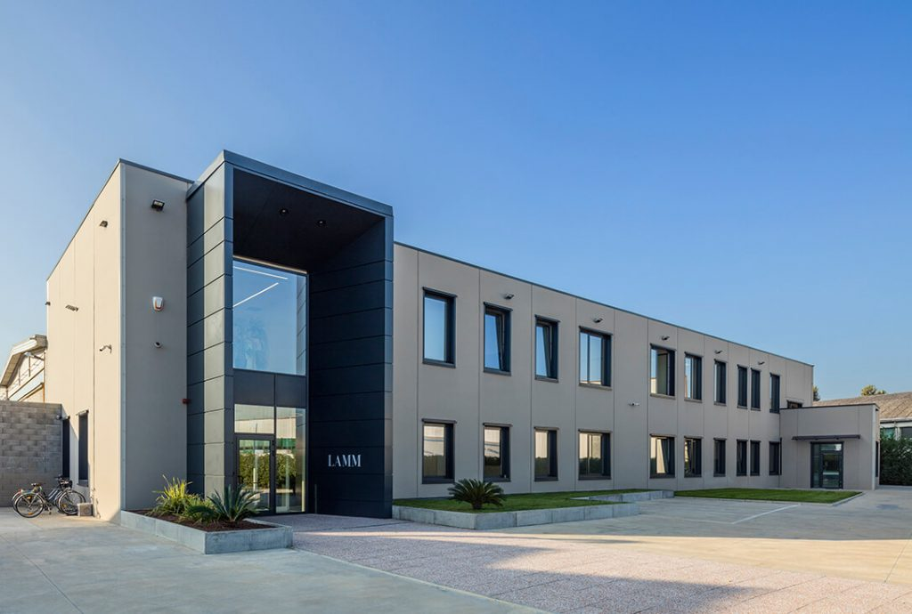

¿Quiénes somos?
HAPPINESS&Co nació en Gijón con una misión clara: ser el latido cultural de Asturias. Somos una plataforma dedicada a descubrir, seleccionar y compartir las mejores experiencias de nuestra región.

HAPPINESS&Co nació en Gijón con una misión clara: ser el latido cultural de Asturias. Somos una plataforma dedicada a descubrir, seleccionar y compartir las mejores experiencias de nuestra región.

Nuestra oficina se encuentra en el centro de Gijón. Un espacio creativo diseñado para conectar con el arte y la comunidad asturiana, siempre con la mirada puesta en el mar Cantábrico.
Liderados por Carlos González Álvarez, somos un grupo de mentes creativas. Marta Rivas aporta la visión artística y David Solares la estrategia de contenidos.

Creemos que la cultura es felicidad. Trabajamos bajo los valores de calidad, transparencia y pasión por nuestra tierra, asegurando que cada evento que recomendamos sea excelente.